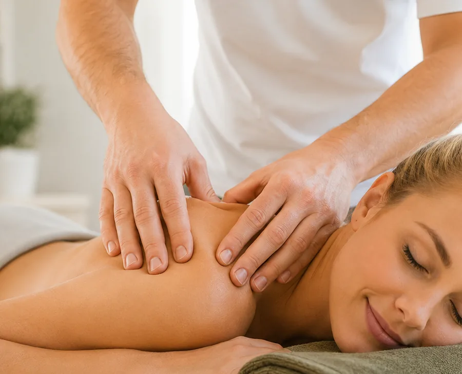
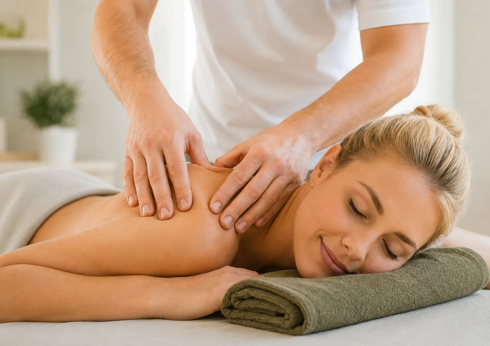
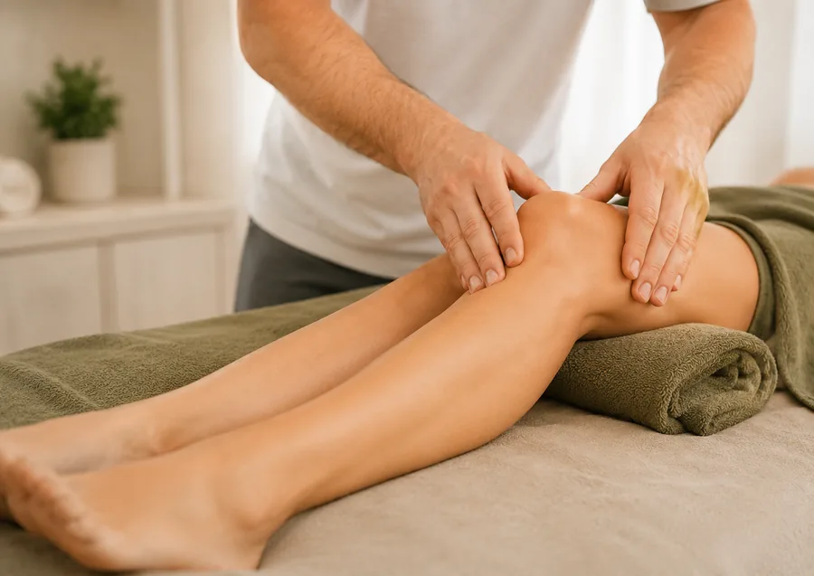
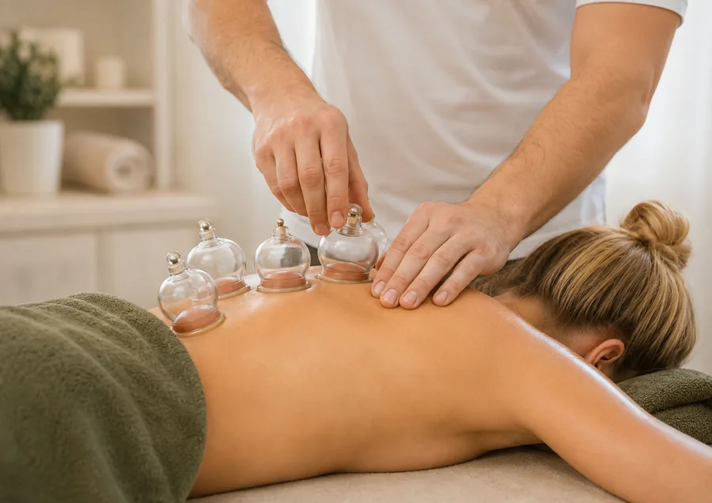
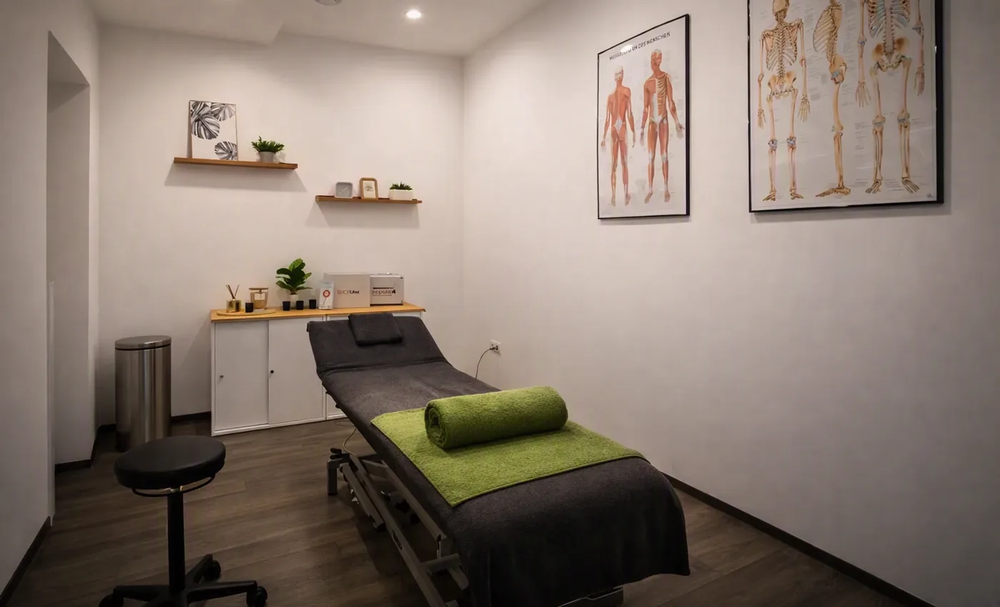
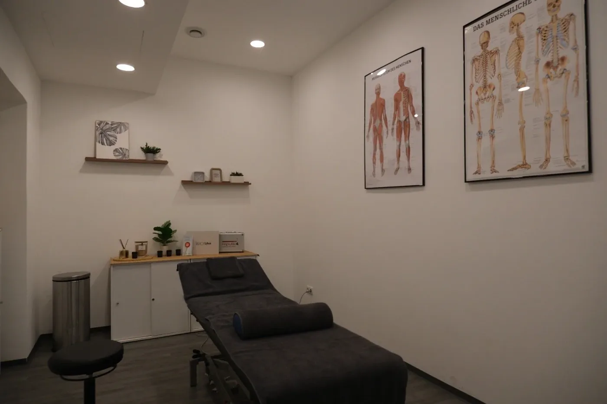
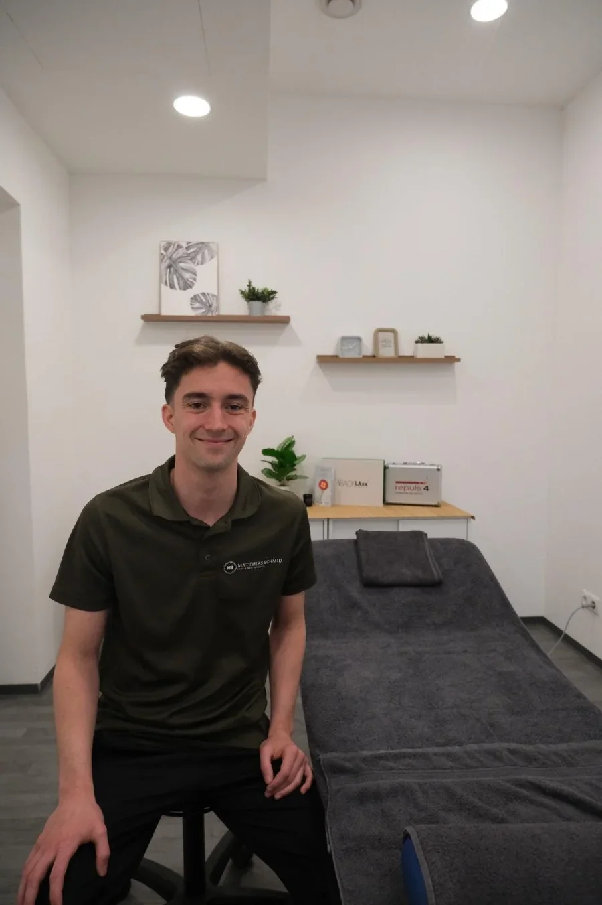

Heilmassage
Löst Verspannungen, lindert Schmerzen und fördert die Durchblutung — bei muskulären Beschwerden oder nach Verletzungen.
Mehr erfahren →
Matthias Schmid ist ausgebildeter medizinischer Masseur und Heilmasseur in Wien 1010. Er begleitet Sie mit fundierter Fachkenntnis zurück zu Beweglichkeit und Wohlbefinden.

Löst Verspannungen, lindert Schmerzen und fördert die Durchblutung — bei muskulären Beschwerden oder nach Verletzungen.
Mehr erfahren →
Unterstützt den Abtransport der Gewebsflüssigkeit, reduziert Schwellungen und mindert Schmerzen bei Wasseransammlungen.
Mehr erfahren →
Traditionelle Methode zur Tiefenentspannung — regt den Stoffwechsel an und löst tiefliegende Verspannungen.
Mehr erfahren →
Unterstützt die natürliche Regeneration des Gewebes — bei älteren Narben ebenso wie begleitend nach frischen Operationen.
Mehr erfahren →
Unterstützende Tape-Anlage zur Stabilisierung von Muskeln und Gelenken — begleitend zu manuellen Behandlungen.
Mehr erfahren →
Lichtbasierte Methode zur Unterstützung von Regeneration und Zellstoffwechsel — auch als Miete für zu Hause.
Mehr erfahren →Ausgebildeter medizinischer Masseur und Heilmasseur — Behandlungen auf fachlich fundierter Grundlage.
Jede Behandlung wird gemeinsam mit Ihnen auf Ihre Beschwerden, Ihre Ziele und Ihr Tempo abgestimmt.
Enge Zusammenarbeit mit einem Sportorthopäden und einem Physiotherapeuten — für abgestimmte Behandlungspläne.
Die Praxis liegt am Hof 11 im 1. Bezirk — zu Fuß, mit der U-Bahn oder in der Mittagspause gut erreichbar.
Eine Behandlung pro Termin, keine Doppelbelegung, kein Zeitdruck — die vereinbarte Zeit gehört Ihnen allein.
Von der Heilmassage über Lymphdrainage und Narbenentstörung bis zu Schröpfen und Lichttherapie — alles aus einer Hand.
Am Hof 11, 1010 Wien — zentral gelegen und gut erreichbar.
Ein Heilmasseur ist in Österreich ein gesetzlich geregelter medizinischer Massageberuf. Er darf über die klassische Massage hinaus medizinisch begründete Behandlungen wie manuelle Lymphdrainage oder Narbenentstörung durchführen.
Für eine Behandlung auf eigene Kosten ist keine ärztliche Zuweisung nötig – Sie können direkt einen Termin vereinbaren. Für einen möglichen Kostenzuschuss der Krankenkasse ist in der Regel eine ärztliche Verordnung erforderlich.
Zu Beginn steht ein kurzes Gespräch über Ihre Beschwerden, Vorerkrankungen und Ziele. Danach wird die Behandlung individuell darauf abgestimmt und der weitere Verlauf gemeinsam besprochen.
Die klassische Massage ist ein Teilbereich der Heilmassage. Die Heilmassage wird gezielt bei bestehenden Beschwerden eingesetzt und umfasst zusätzlich Techniken wie Triggerpunktbehandlung, Lymphdrainage oder Narbenentstörung.
In dieser Praxis kostet eine Heilmassage 40 Euro für 25 Minuten und 80 Euro für 50 Minuten. Alle Preise finden Sie auf der Preisseite.
Ich melde mich innerhalb von 24 Stunden bei Ihnen zurück.
Termin buchen